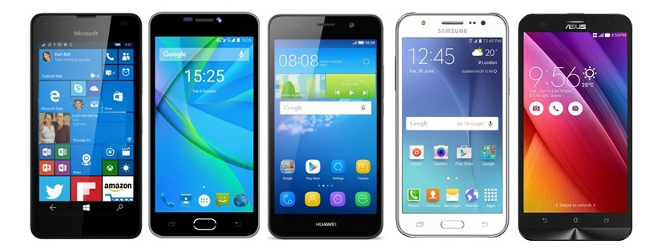
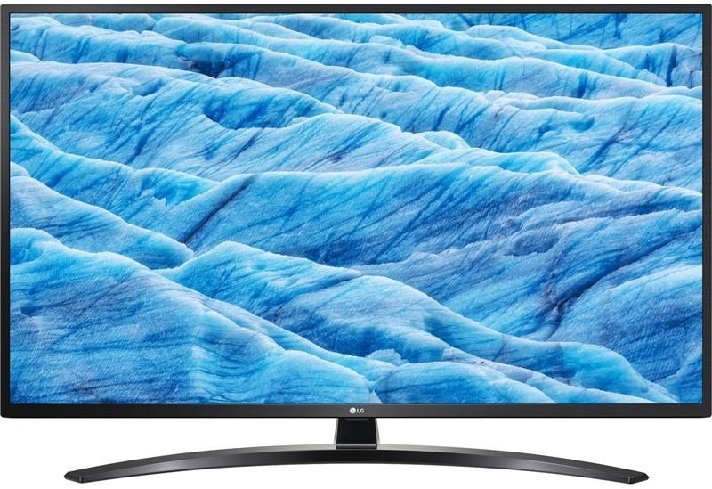

Mobilní telefon
Základní informace: Mobilní telefony poskytují kromě spojení s telefonní sítí také další telekomunikačních služby jako např. SMS, MMS a připojení na Internet.
Televize
Základní informace: Televize, ve významu technickém, označuje přenos pohyblivých obrazů elektronickou cestou, většinou s doprovodem zvuku. Princip televize je založen na rychlém, neustále opakovaném rozkladu obrazu na body.